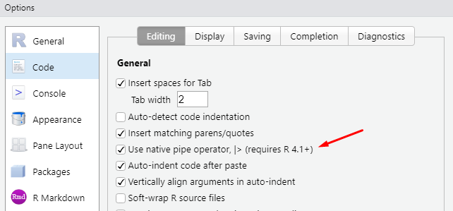
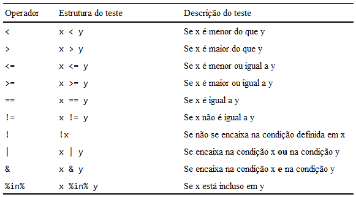

library(tidyverse)
library(dplyr)5 Transformando dados com dplyr
5.1 Introdução e pré-requisitos
São raras as ocasiões em que os seus dados já se encontram no formato exato que você precisa para realizar as suas análises, ou para gerar os gráficos que você deseja (WICKHAM; GROLEMUND, 2017). Por essa razão, você irá passar uma parte considerável de seu tempo calculando novas variáveis e aplicando transformações sobre os seus dados. Pelo fato de seus dados estarem, na maioria das situações, alocados em um data.frame, ou em um tibble, você precisa de ferramentas que sejam eficientes com tais estruturas (PENG, 2015). Esse é o objetivo do pacote dplyr com o qual vamos trabalhar neste capítulo.
Para que você tenha acesso as funções e possa acompanhar os exemplos desse capítulo, você precisa chamar pelo pacote dplyr. Porém, vamos utilizar algumas bases de dados que estão disponíveis através de outros pacotes presentes no tidyverse. Por isso, é preferível que você chame pelo tidyverse por meio do comando library().
5.2 Panorama e padrões do pacote dplyr
Segundo a página oficial1, o pacote dplyr oferece um conjunto de “verbos” (i.e. funções) para as operações mais comumente aplicadas em tabelas. Ou seja, as funções desse pacote em geral aceitam um data.frame como input, e retornam um novo data.frame como output. Dito de forma menos técnica, você fornece uma tabela para essas funções, e elas lhe retornam como resultado uma nova tabela.
Se você possui alguma experiência com relational database management systems (RDBMS), você vai acabar percebendo ao longo deste capítulo, que o pacote dplyr é profundamente inspirado nos verbos da linguagem SQL. Por esse motivo, muitos usuários tendem a chamar as funções do pacote dplyr de “verbos”. Logo abaixo, temos uma lista das principais funções oferecidas pelo pacote, além de uma descrição rápida da ação realizada por cada um desses verbos.
select(): busca selecionar ou extrair colunas de seudata.frame.filter(): busca filtrar linhas de seudata.frame.arrange(): busca ordenar (ou organizar) as linhas de seudata.frame.mutate(): busca adicionar ou calcular novas colunas em seudata.frame.summarise(): busca sintetizar múltiplos valores de seudata.frameem um único valor.group_by(): permite que as operações sejam executadas dentro de cada “grupo” de seudata.frame; em outras palavras, a função busca definir os grupos existentes em seudata.frame, e deixar essa definição explícita e disponível para os outros verbos, de modo que eles possam respeitar esses grupos em suas operações.
Dentre os verbos acima, o group_by() é definitivamente o mais difícil de se explicar de uma maneira clara e, ao mesmo tempo, resumida. De qualquer maneira, vamos discutir ele por extenso na seção Agrupando dados com group_by() e gerando estatísticas sumárias com summarise(). Além disso, também vamos abordar nesse capítulo, o uso do operador pipe (%>%) que provêm do pacote magrittr, e que hoje, faz parte da identidade do pacote dplyr, e do tidyverse como um todo.
PENG (2015) destacou algumas características compartilhadas pelas funções do pacote dplyr:
Possuem como primeiro argumento (
.data), odata.frameno qual você deseja aplicar a função que você está utilizando.Os argumentos subsequentes buscam descrever como e onde aplicar a função sobre o
data.framedefinido no primeiro argumento.Geram um novo
data.framecomo resultado.Como você definiu o
data.framea ser utilizando no primeiro argumento da função, você pode se referir às colunas dessedata.frameapenas pelo seus nomes. Ou seja, dentro das funções do pacotedplyr, você não precisa mais do operador$para acessar as colunas dodata.frameutilizado.
No momento, essas características podem parecer confusas. Porém, você irá rapidamente reconhecê-las ao longo deste capítulo.
5.3 Operador pipe do pacote magrittr (%>%)
Hoje, o operador pipe (%>%) faz parte da identidade dos pacotes que compõe o tidyverse. Por esse motivo, você vai encontrar esse operador em praticamente todos os script que utilizam algum desses pacotes. Grande parte dessa identidade foi construída nos últimos anos, em especial, com a obra de WICKHAM; GROLEMUND (2017) que se tornou um importante livro-texto da linguagem R como um todo.
O operador pipe provêm do pacote magrittr, e o seu único objetivo é tornar o seu código mais claro e compreensível. Ou seja, o pipe em nada altera o resultado ou as configurações de seus comandos, ele apenas os organiza em uma estrutura mais limpa e arranjada. Apesar de sua origem ser o pacote magrittr, o pipe é carregado automaticamente quando chamamos pelo tidyverse, através do comando library(). Com isso, temos duas opções para termos acesso a esse operador: chamar diretamente pelo pacote magrittr, ou chamar pelo tidyverse.
## Com um desses comandos você
## pode utilizar o operador %>%
library(tidyverse)
## Ou
library(magrittr)ATALHO: No RStudio, você pode escrever um pipe usando o atalho Ctrl + Shift + M.
Organizar o seu código é algo de extrema importância, e o pipe te ajuda a cumprir essa missão. Além disso, a estrutura em “cadeia” construída pelo pipe gera uma grande economia em seu tempo de trabalho, pois você não precisa mais se preocupar em salvar o resultado de vários passos intermediários em algum objeto.
Dessa maneira, você pode focar uma parte maior de seu tempo nas ações e transformações que você deseja aplicar, e no resultado que você deseja atingir. Para mais, essa estrutura também vai salvar muito de seu tempo, nos momentos em que você retornar ao seu trabalho no dia seguinte. Pois o seu código fica mais claro e fácil de se ler nessa estrutura. Com isso, você pode recuperar com maior rapidez a compreensão do ponto em que você parou no dia anterior.
Isso é muito importante, pois você nunca está trabalhando sozinho! Você sempre está, no mínimo, trabalhando com o seu futuro eu (WICKHAM; GROLEMUND, 2017). Por isso, qualquer quantidade de tempo que você emprega para tornar os seus comandos mais legíveis e eficientes, você estará automaticamente economizando o seu tempo no dia seguinte, quando você terá de retornar a esses comandos, e prosseguir com o seu trabalho.
Para mais, os seus possíveis colegas de trabalho, ou outras pessoas que estiverem envolvidas no desenvolvimento de seu script, vão compreender de maneira mais eficiente as transformações que você está aplicando e, portanto, vão ser capazes de contribuir com o seu trabalho de maneira mais rápida.
5.3.1 O que o pipe faz ?
Em qualquer análise, temos em geral diversas etapas ou transformações a serem executadas, e em sua maioria, essas etapas assumem uma ordem específica. Quando realizamos essas etapas no R, nós comumente salvamos os resultados de cada passo em novos objetos, e utilizamos esses objetos “intermediários” em cada operação adicional para chegarmos ao resultado final que desejamos. Perceba no exemplo abaixo, o trabalho que temos ao salvarmos os resultados de cada passo em um objeto, e utilizarmos esse objeto na próxima transformação.
dados <- mpg
agrupamento <- group_by(.data = dados, class)
base_ordenada <- arrange(.data = agrupamento, hwy)
base_completa <- mutate(
.data = base_ordenada,
media = mean(hwy),
desvio = hwy - media
)Aqui se encontra uma vantagem muito importante do operador pipe, pois ele elimina essa necessidade de objetos “intermediários”, ao “carregar” os resultados ao longo de diversas funções. Em outras palavras, esse operador funciona como uma ponte (ou uma “conexão”) entre cada etapa, ou entre cada função aplicada. Dito de uma maneira mais específica, quando conectamos duas funções por um pipe, o operador carrega o resultado da primeira função, e o insere como o primeiro argumento da segunda função. Com isso, eu posso reescrever os comandos anteriores da seguinte forma:
mpg %>%
group_by(class) %>%
arrange(hwy) %>%
mutate(
media = mean(hwy),
desvio = hwy - media
)Além das vantagens destacadas até o momento, ao evitar o uso de objetos “intermediários”, o pipe acaba evitando que você use desnecessariamente a memória de seu computador. Pois cada objeto criado no R, precisa ocupar um espaço de sua memória RAM para permanecer “vivo” e disponível em sua sessão. Como estamos evitando criar novos objetos “intermediários”, estamos utilizando menos memória para realizar exatamente as mesmas etapas e gerar os mesmos resultados.
Apenas para que o uso do pipe fique claro, se eu possuo as funções x(), y() e z(), e desejo calcular a expressão z(y(x(10), times = 1), n = 20, replace = TRUE), nós podemos reescrever essa expressão do modo exposto abaixo. Dessa maneira, o pipe vai pegar o resultado de x(10), e inseri-lo como o primeiro argumento da função y(); depois de calcular o resultado da função y(), o próximo pipe vai passá-lo para o primeiro argumento da função z(); e como a função z() é a última função da cadeia, o console vai lhe mostrar o resultado final desse processo.
## Expressão original
z(y(x(10), times = 1), n = 20, replace = TRUE)
## Com o uso do pipe %>%
x(10) %>%
y(times = 1) %>%
z(n = 20, replace = TRUE)5.3.2 O que o pipe não é capaz de fazer ?
O pipe não é capaz de trabalhar perfeitamente com qualquer função, e a principal característica que você precisa observar para identificar se essa afirmação é verdadeira ou falsa para uma dada função, é o seu primeiro argumento.
Como o pipe insere o resultado da expressão anterior no primeiro argumento da próxima função, esse primeiro argumento precisa corresponder ao argumento no qual você deseja utilizar esse resultado. Na maior parte do tempo, desejamos utilizar esse resultado como os dados sobre os quais vamos aplicar a nossa próxima função.
Este é um dos principais motivos pelos quais praticamente todas as funções de todos os pacotes que compõe o tidyverse, trabalham perfeitamente bem com o operador pipe. Pois todas essas funções possuem como primeiro argumento, algo parecido com .data, data ou x, que busca definir o objeto sobre o qual vamos aplicar a função.
Porém, caso o argumento a ser utilizado, esteja em uma posição diferente (se trata do segundo, terceiro ou quarto argumento da função), você pode utilizar um ponto final (.) para alterar a posição em que o resultado das etapas anteriores será introduzido. Basta posicionar o ponto final no argumento em que você deseja inserir esse resultado.
Um clássico exemplo que se encaixa nessa hipótese, é a função lm(), que é a principal função empregada no cálculo de uma regressão linear no R. Nessa função, o primeiro argumento corresponde a fórmula a ser utilizada na regressão; já os dados a serem usados na regressão, são delimitados no segundo argumento da função (data). Veja no exemplo abaixo, que eu utilizo um ponto final sobre o argumento data, para dizer ao pipe que ele deve inserir o resultado anterior especificamente nesse argumento.
mpg %>%
lm(hwy ~ cyl, data = .)
Call:
lm(formula = hwy ~ cyl, data = .)
Coefficients:
(Intercept) cyl
40.019 -2.815 5.3.3 Duas dicas rápidas sobre o pipe
O pipe cria uma espécie de efeito em cadeia, e muitas vezes nos preocupamos demais com as etapas dessa cadeia, e nos esquecemos de definir o local em que o resultado dessa cadeia deve ocupar. Portanto, lembre-se que para salvar o resultado final da cadeia formada pelos seus pipe’s, você necessita salvar esse resultado em algum objeto. Para isso, você deve posicionar o nome do objeto, e o símbolo de assignment (<-), logo no início dessa cadeia, como no exemplo abaixo.
resultado <- mpg %>%
group_by(class) %>%
arrange(hwy) %>%
mutate(
consumo_medio = mean(hwy),
desvio_consumo = hwy - consumo_medio
) %>%
select(
manufacturer, model, class,
consumo_medio, desvio_consumo
)
resultado# A tibble: 234 × 5
# Groups: class [7]
manufacturer model class consumo_medio desvio_consumo
<chr> <chr> <chr> <dbl> <dbl>
1 dodge dakota pickup 4wd pickup 16.9 -4.88
2 dodge durango 4wd suv 18.1 -6.13
3 dodge ram 1500 pickup 4wd pickup 16.9 -4.88
4 dodge ram 1500 pickup 4wd pickup 16.9 -4.88
5 jeep grand cherokee 4wd suv 18.1 -6.13
# ℹ 229 more rowsUma outra dica, seria não formar cadeias muito longas. Se você precisa aplicar várias transformações em sequência sobre o mesmo objeto, tente dividir essas várias transformações em vários “blocos” de pipe’s. Como um guia, o ideal é que uma cadeia de pipe’s nunca passe de 10 etapas. Caso você precise aplicar mais do que 10 etapas, é melhor que você salve o resultado da 10° etapa em um objeto, e inicie uma nova cadeia de pipe’s a partir deste objeto.
5.4 Operador pipe nativo do R (|>)
Depois do grande sucesso do operador pipe criado pelo pacote magrittr (%>%), a equipe que mantém a linguagem R decidiu desenvolver um operador pipe nativo para a linguagem. Tal operador possui o formato |>, e foi oficialmente introduzido na versão 4.1 do R.
Em resumo, o operador |> possui a exata mesma funcionalidade do operador %>%. Ou seja, ele pega o resultado da função a esquerda, e, o transfere para o primeiro argumento da função a direita. Logo, poderíamos tranquilamente reescrever o exemplo anterior, ao substituir o operador %>% por |>, produzindo assim, o mesmo resultado:
resultado <- mpg |>
group_by(class) |>
arrange(hwy) |>
mutate(
consumo_medio = mean(hwy),
desvio_consumo = hwy - consumo_medio
) |>
select(
manufacturer, model, class,
consumo_medio, desvio_consumo
)
resultado# A tibble: 234 × 5
# Groups: class [7]
manufacturer model class consumo_medio desvio_consumo
<chr> <chr> <chr> <dbl> <dbl>
1 dodge dakota pickup 4wd pickup 16.9 -4.88
2 dodge durango 4wd suv 18.1 -6.13
3 dodge ram 1500 pickup 4wd pickup 16.9 -4.88
4 dodge ram 1500 pickup 4wd pickup 16.9 -4.88
5 jeep grand cherokee 4wd suv 18.1 -6.13
# ℹ 229 more rowsContudo, apesar de realizar o mesmo trabalho, o operador |> possui três características importantes:
Primeiro, esse operador é nativo. Ou seja, ele vem “de fábrica”, junto com o R. Logo, você não precisa chamar por nenhum pacote extra para utilizá-lo;
Segundo, enquanto o operador
%>%executa cada uma das etapas de forma sequencial, o operador|>utiliza uma transformação sintática (syntax transformation) para agrupar todas as etapas em uma única chamada;Terceiro, enquanto o operador
%>%utiliza um ponto final para alterar a posição em que o resultado será inserido, o operador|>utiliza um underline (_) para realizar esse serviço;
Quanto à segunda característica supracitada, o operador |> sempre realiza uma transformação sintática sobre a sua cadeia de operações, antes de executá-la. Em outras palavras, ele reescreve os comandos em sua cadeia, com o objetivo de agrupar todas as operações em um único comando. Você pode ver o resultado desse processo, ao revelar a expressão gerada por uma cadeia qualquer, com a função quote():
quote({
mpg |>
group_by(class) |>
arrange(hwy) |>
mutate(
consumo_medio = mean(hwy),
desvio_consumo = hwy - consumo_medio
) |>
select(
manufacturer, model, class,
consumo_medio, desvio_consumo
)
})## {
## select(mutate(arrange(group_by(mpg, class), hwy),
## consumo_medio = mean(hwy),
## desvio_consumo = hwy - consumo_medio),
## manufacturer, model, class,
## consumo_medio, desvio_consumo)
## }Portanto, o operador |> agrupa todas as suas operações em um único comando, e, em seguida, executa esse comando único para adquirir o resultado final de sua cadeia. Em contrapartida, o operador %>% executa cada uma das etapas de sua cadeia de forma separada.
Quanto à terceira característica supracitada, para alterarmos a posição em que o resultado da expressão anterior é inserido, precisamos utilizar um underline ao invés de um ponto final (como ocorre com %>%). Vale destacar que este underline é permitido apenas em argumentos nomeados. Em outras palavras, a expressão x |> y(10, _) não é permitida, enquanto a expressão x |> y(10, z = _) é.
Tendo isso em mente, para reproduzirmos o exemplo anterior dado com a função lm(), teríamos:
mpg |>
lm(hwy ~ cyl, data = _)
Call:
lm(formula = hwy ~ cyl, data = mpg)
Coefficients:
(Intercept) cyl
40.019 -2.815 5.4.1 Utilizando o operador pipe nativo no RStudio
Em versões mais recentes do RStudio, você pode utilizar o pipe nativo do R através do atalho Crtl + Shift + M. Basta acessar a janela de configurações globais, através de Tools \(\rightarrow\) Global Options..., depois, ir na seção de Code, e, marcar a caixa “Use native pipe operator |>”, como demonstrado na Figura 5.1 abaixo:

5.5 Selecionando colunas com select()
Como definimos anteriormente, a função select() busca selecionar colunas de seu data.frame. Você já possui uma boa ideia de como realizar essa ação através da função de subsetting ([). Porém, nós podemos usufruir da flexibilidade oferecida pela função select(), que lhe permite realizar essa mesma operação de diversas maneiras intuitivas.
No geral, temos ao menos 5 métodos diferentes que podemos utilizar na função select():
simplesmente listar o nome das colunas que desejamos;
fornecer um vetor externo, contendo os nomes das colunas a serem extraídas;
selecionar um conjunto de colunas com base em seu tipo (
integer,double,character,logical);selecionar um conjunto de colunas com base em padrões que aparecem nos nomes dessas colunas (nome começa por y, ou termina em z, ou contém x);
selecionar um conjunto de colunas com base em seus índices numéricos (1° coluna, 2° coluna, 3° coluna, etc.).
Como exemplo inicial, vamos utilizar a tabela billboard, que apresenta a posição de diversas músicas na lista Billboard Top 100, ao longo do ano 2000. Se você chamou com sucesso pelo tidyverse, você tem acesso a essa tabela. Perceba que a posição de cada música descrita na tabela, é apresentada de forma semanal, onde cada semana possui a sua coluna própria. Por essa razão, temos uma quantidade exorbitante de colunas na tabela.
billboard# A tibble: 317 × 79
artist track date.entered wk1 wk2 wk3 wk4 wk5 wk6 wk7 wk8
<chr> <chr> <date> <dbl> <dbl> <dbl> <dbl> <dbl> <dbl> <dbl> <dbl>
1 2 Pac Baby… 2000-02-26 87 82 72 77 87 94 99 NA
2 2Ge+her The … 2000-09-02 91 87 92 NA NA NA NA NA
3 3 Doors Do… Kryp… 2000-04-08 81 70 68 67 66 57 54 53
4 3 Doors Do… Loser 2000-10-21 76 76 72 69 67 65 55 59
5 504 Boyz Wobb… 2000-04-15 57 34 25 17 17 31 36 49
# ℹ 312 more rows
# ℹ 68 more variables: wk9 <dbl>, wk10 <dbl>, wk11 <dbl>, wk12 <dbl>, …O método 5 citado acima é um dos métodos mais práticos e eficientes de se utilizar a função select(). Por exemplo, se desejássemos extrair todas as colunas entre a 1° e 4° colunas da tabela, poderíamos fornecer um vetor à função, contendo uma sequência de 1 a 4, que representa os índices das colunas que desejamos, como no exemplo abaixo.
billboard_sel <- select(billboard, 1:4)
billboard_sel# A tibble: 317 × 4
artist track date.entered wk1
<chr> <chr> <date> <dbl>
1 2 Pac Baby Don't Cry (Keep... 2000-02-26 87
2 2Ge+her The Hardest Part Of ... 2000-09-02 91
3 3 Doors Down Kryptonite 2000-04-08 81
4 3 Doors Down Loser 2000-10-21 76
5 504 Boyz Wobble Wobble 2000-04-15 57
# ℹ 312 more rowsAgora, e se você precisasse selecionar todas as colunas que representam as semanas? Nesse caso, o método 5 ainda seria uma boa alternativa, pois você precisaria apenas fornecer uma sequência que represente a posição dessas colunas na tabela (de 4 a 79 para ser mais preciso).
Porém, todas essas colunas possuem um padrão em seus nomes. Elas se iniciam pelos caracteres "wk", acrescidos de um número que representa o índice da semana que essa coluna corresponde. Portanto, em todas as ocasiões que houver algum padrão presente nos nomes das colunas que você deseja selecionar, o método 4 que citamos configura-se como uma ótima solução. Nesse método, devemos utilizar as funções de suporte starts_with(), ends_with(), matches().
Como os seus próprios nomes dão a entender, as funções starts_with() e ends_with() vão selecionar qualquer coluna de sua tabela que comece (start) ou termine (end) por uma determinada cadeia de caracteres, respectivamente. Como exemplo, eu posso selecionar todas as colunas que apresentam as posições semanais na tabela billboard, ao encontrar todas as colunas que começam pelas letras "wk", com a função starts_with().
billboard_sel <- select(billboard, starts_with("wk"))
billboard_sel# A tibble: 317 × 76
wk1 wk2 wk3 wk4 wk5 wk6 wk7 wk8 wk9 wk10 wk11 wk12 wk13
<dbl> <dbl> <dbl> <dbl> <dbl> <dbl> <dbl> <dbl> <dbl> <dbl> <dbl> <dbl> <dbl>
1 87 82 72 77 87 94 99 NA NA NA NA NA NA
2 91 87 92 NA NA NA NA NA NA NA NA NA NA
3 81 70 68 67 66 57 54 53 51 51 51 51 47
4 76 76 72 69 67 65 55 59 62 61 61 59 61
5 57 34 25 17 17 31 36 49 53 57 64 70 75
# ℹ 312 more rows
# ℹ 63 more variables: wk14 <dbl>, wk15 <dbl>, wk16 <dbl>, wk17 <dbl>, …Já a função matches() se trata de um caso muito mais flexível das funções starts_with() e ends_with(), pois ela lhe permite selecionar qualquer coluna cujo o nome se encaixa em uma dada expressão regular. Expressões regulares são uma poderosa ferramenta para processamento de texto, a qual vamos discutir no capítulo Manipulação e transformação de strings com stringr, especialmente na seção Expressões regulares (ou regex) com str_detect().
## Seleciona todas as semanas que são
## maiores do que 9 e menores do que 100.
## Ou seja, toda semana com dois dígitos
billboard %>%
select(matches("wk[0-9]{2}")) %>% print(n = 5)# A tibble: 317 × 67
wk10 wk11 wk12 wk13 wk14 wk15 wk16 wk17 wk18 wk19 wk20 wk21 wk22
<dbl> <dbl> <dbl> <dbl> <dbl> <dbl> <dbl> <dbl> <dbl> <dbl> <dbl> <dbl> <dbl>
1 NA NA NA NA NA NA NA NA NA NA NA NA NA
2 NA NA NA NA NA NA NA NA NA NA NA NA NA
3 51 51 51 47 44 38 28 22 18 18 14 12 7
4 61 61 59 61 66 72 76 75 67 73 70 NA NA
5 57 64 70 75 76 78 85 92 96 NA NA NA NA
# ℹ 312 more rows
# ℹ 54 more variables: wk23 <dbl>, wk24 <dbl>, wk25 <dbl>, wk26 <dbl>, …## Seleciona todas as colunas cujo nome
## possua um ponto final antecedido por
## 4 letras
billboard %>%
select(matches("[a-z]{4}[.]")) %>% print(n = 5)# A tibble: 317 × 1
date.entered
<date>
1 2000-02-26
2 2000-09-02
3 2000-04-08
4 2000-10-21
5 2000-04-15
# ℹ 312 more rowsEssas são maneiras eficientes de selecionarmos um grande conjunto de colunas, porém, muitas vezes as nossas necessidades são pequenas e, portanto, não exigem mecanismos tão poderosos.
Nessas situações, o método 1 se torna útil pois ele consiste em simplesmente listarmos o nome das colunas desejadas. Como exemplo, eu posso selecionar as colunas artist, track e wk5 da tabela billboard pelo comando abaixo.
billboard %>% select(artist, track, wk5)# A tibble: 317 × 3
artist track wk5
<chr> <chr> <dbl>
1 2 Pac Baby Don't Cry (Keep... 87
2 2Ge+her The Hardest Part Of ... NA
3 3 Doors Down Kryptonite 66
4 3 Doors Down Loser 67
5 504 Boyz Wobble Wobble 17
# ℹ 312 more rowsVale destacar que a ordem dos índices utilizados importa para a função select(). Logo, se no exemplo acima, eu listasse as colunas na ordem track, wk5 e artist, o novo data.frame resultante de select(), iria conter essas colunas precisamente nessa ordem.
O mesmo efeito seria produzido, caso eu utilizasse novamente o método 5, e fornecesse o vetor c(3, 2, 4) à função. Dessa forma, select() iria me retornar um novo data.frame contendo 3 colunas, que correspondem a 3°, 2° e 4° colunas da tabela billboard, exatamente nessa ordem.
Por outro lado, não há uma maneira de variarmos a ordem dos resultados gerados nos métodos 3 e 4, especificamente. Por isso, caso você utilize um desses dois métodos, as colunas selecionadas serão apresentadas no novo data.frame, precisamente na ordem em que eles aparecem no data.frame inicial.
Visto esses pontos, ao invés de selecionar colunas, você também pode utilizar o método 1 para rapidamente eliminar algumas colunas de seu data.frame, ao posicionar um sinal negativo (-) antes do nome da coluna que você deseja retirar. Por exemplo, eu posso selecionar todas as colunas da tabela mpg, exceto as colunas hwy e manufacturer por meio do seguinte comando:
mpg %>% select(-hwy, -manufacturer)# A tibble: 234 × 9
model displ year cyl trans drv cty fl class
<chr> <dbl> <int> <int> <chr> <chr> <int> <chr> <chr>
1 a4 1.8 1999 4 auto(l5) f 18 p compact
2 a4 1.8 1999 4 manual(m5) f 21 p compact
3 a4 2 2008 4 manual(m6) f 20 p compact
4 a4 2 2008 4 auto(av) f 21 p compact
5 a4 2.8 1999 6 auto(l5) f 16 p compact
# ℹ 229 more rowsEm contrapartida, o método 3 busca selecionar um conjunto de colunas com base em seu tipo de dado, através da função where() e das funções de teste lógico is.*() (is.double, is.character, is.integer, …). Como exemplo, nós podemos selecionar todas as colunas da tabela billboard que contém dados textuais, através do comando abaixo. Portanto, para utilizar esse método você precisa apenas se referir a função is.*() que corresponde ao tipo de dado no qual você está interessado, dentro da função where().
billboard %>% select(where(is.character))# A tibble: 317 × 2
artist track
<chr> <chr>
1 2 Pac Baby Don't Cry (Keep...
2 2Ge+her The Hardest Part Of ...
3 3 Doors Down Kryptonite
4 3 Doors Down Loser
5 504 Boyz Wobble Wobble
# ℹ 312 more rowsCom isso, você possui não apenas uma boa variedade de métodos disponíveis na função select(), mas você também é capaz de misturá-los livremente dentro da função. Ou seja, se for de meu desejo, eu posso utilizar os métodos 2, 4 e 5 ao mesmo tempo, como no exemplo abaixo. Tratando especificamente do método 2, eu preciso fornecer dentro da função all_of(), um vetor contendo os nomes das colunas desejadas.
Como exemplo, eu posso novamente extrair as colunas artist, track e wk5 através desse método. O método 2, em particular, se torna um método interessante quando ainda não conhecemos o conjunto de colunas a serem extraídas. Talvez você precise aplicar previamente diversos testes sobre o seu data.frame, para identificar essas colunas. Logo, um vetor contendo os nomes das colunas desejadas seria o resultado ideal para tais testes.
vec <- c("artist", "track", "wk5")
billboard %>% select(
all_of(vec), ## Método 2
3:5, ## Método 5
matches("wk[0-9]{2}") ## Método 4
)# A tibble: 317 × 73
artist track wk5 date.entered wk1 wk2 wk10 wk11 wk12 wk13 wk14
<chr> <chr> <dbl> <date> <dbl> <dbl> <dbl> <dbl> <dbl> <dbl> <dbl>
1 2 Pac Baby… 87 2000-02-26 87 82 NA NA NA NA NA
2 2Ge+her The … NA 2000-09-02 91 87 NA NA NA NA NA
3 3 Doors Do… Kryp… 66 2000-04-08 81 70 51 51 51 47 44
4 3 Doors Do… Loser 67 2000-10-21 76 76 61 61 59 61 66
5 504 Boyz Wobb… 17 2000-04-15 57 34 57 64 70 75 76
# ℹ 312 more rows
# ℹ 62 more variables: wk15 <dbl>, wk16 <dbl>, wk17 <dbl>, wk18 <dbl>, …5.6 Filtrando linhas com filter()
Você também já possui conhecimento para realizar essa operação através da função de subsetting ([). Porém, novamente o pacote dplyr nos oferece uma alternativa mais intuitiva. A função filter() busca filtrar linhas de uma tabela de acordo com uma condição lógica de nossa escolha. Ou seja, os operadores lógicos são primordiais para essa função. Por isso, temos na Figura 5.2, um resumo de cada um deles.

Portanto, ao utilizar a função filter() você deve construir uma condição lógica que seja capaz de identificar as linhas que você deseja filtrar. Como exemplo inicial, nós podemos retornar à tabela mpg, que contém dados de consumo de diversos modelos de carro. Por exemplo, nós podemos filtrar todas as linhas que dizem respeito a modelos da Toyota, através do comando abaixo. Como um paralelo, temos mais abaixo a mesma operação segundo a função de subsetting.
mpg %>% filter(manufacturer == "toyota")# A tibble: 34 × 11
manufacturer model displ year cyl trans drv cty hwy fl class
<chr> <chr> <dbl> <int> <int> <chr> <chr> <int> <int> <chr> <chr>
1 toyota 4runner 4wd 2.7 1999 4 manu… 4 15 20 r suv
2 toyota 4runner 4wd 2.7 1999 4 auto… 4 16 20 r suv
3 toyota 4runner 4wd 3.4 1999 6 auto… 4 15 19 r suv
4 toyota 4runner 4wd 3.4 1999 6 manu… 4 15 17 r suv
5 toyota 4runner 4wd 4 2008 6 auto… 4 16 20 r suv
# ℹ 29 more rows## A mesma operação por subsetting:
clog <- mpg$manufacturer == "toyota"
mpg[clog, ]Múltiplas condições lógicas podem ser construídas dentro da função filter(). Por exemplo, podemos ser um pouco mais específicos e selecionarmos apenas os modelos da Toyota que possuem um motor de 4 cilindradas com o comando abaixo. Repare abaixo, que ao acrescentarmos novas condições na função filter(), elas acabam se tornando dependentes. Ou seja, ambas as condições devem ser atendidas ao mesmo tempo em cada linha retornada pela função filter().
mpg %>% filter(manufacturer == "toyota", cyl == 4)# A tibble: 18 × 11
manufacturer model displ year cyl trans drv cty hwy fl class
<chr> <chr> <dbl> <int> <int> <chr> <chr> <int> <int> <chr> <chr>
1 toyota 4runner 4wd 2.7 1999 4 manu… 4 15 20 r suv
2 toyota 4runner 4wd 2.7 1999 4 auto… 4 16 20 r suv
3 toyota camry 2.2 1999 4 manu… f 21 29 r mids…
4 toyota camry 2.2 1999 4 auto… f 21 27 r mids…
5 toyota camry 2.4 2008 4 manu… f 21 31 r mids…
# ℹ 13 more rows## A mesma operação por subsetting:
clog <- mpg$manufacturer == "toyota" & mpg$cyl == 4
mpg[clog, ]Nós tradicionalmente estabelecemos relações de dependência entre condições lógicas, por meio do operador &. Mas a função filter() busca ser prática e, por isso, ela automaticamente realiza esse trabalho por nós. Porém, isso implica que se as suas condições forem independentes, ajustes precisam ser feitos, através do operador |.
Visto esse ponto, você pode estar interessado em filtrar a sua tabela, de acordo com um conjunto de valores. Por exemplo, ao invés de selecionar apenas os modelos pertencentes à Toyota, podemos selecionar um conjunto maior de marcas. Em ocasiões como essa, o operador %in% se torna útil, pois você está pesquisando se o valor presente em cada linha de sua tabela, pertence ou não a um dado conjunto de valores.
marcas <- c("volkswagen", "audi", "toyota", "honda")
mpg %>%
filter(manufacturer %in% marcas)# A tibble: 88 × 11
manufacturer model displ year cyl trans drv cty hwy fl class
<chr> <chr> <dbl> <int> <int> <chr> <chr> <int> <int> <chr> <chr>
1 audi a4 1.8 1999 4 auto(l5) f 18 29 p compa…
2 audi a4 1.8 1999 4 manual(m5) f 21 29 p compa…
3 audi a4 2 2008 4 manual(m6) f 20 31 p compa…
4 audi a4 2 2008 4 auto(av) f 21 30 p compa…
5 audi a4 2.8 1999 6 auto(l5) f 16 26 p compa…
# ℹ 83 more rows## A mesma operação por subsetting:
marcas <- c("volkswagen", "audi", "toyota", "honda")
clog <- mpg$manufacturer %in% marcas
mpg[clog, ]5.6.1 Cuidados com o operador de igualdade
Quando você estiver filtrando as linhas de sua tabela de acordo com uma condição de igualdade, é importante que você tome alguns cuidados, especialmente se valores textuais estiverem envolvidos nessa condição. O primeiro ponto a ser abordado é o uso do operador ==, que para além de igualdade, ele busca encontrar valores exatamente iguais.
O “exatamente” é importante aqui, pois certos valores numéricos podem ser aparentemente idênticos aos nossos olhos, mas ainda assim, diferentes segundo a visão de ==. Isso ocorre especialmente com valores numéricos do tipo double. Pois os nossos computadores utilizam precisão aritmética finita para guardar esse tipo de valor (WICKHAM; GROLEMUND, 2017, p. 47). Isso significa que os nossos computadores guardam apenas as casas decimais significantes de um valor double, e a perda de casas decimais que ocorre nesse processo, pode ser a fonte de alguma diferença em operações aritméticas. Por exemplo, se testarmos a igualdade entre \((\sqrt{2})^2 = 2\), o R vai nos indicar alguma diferença existente entre esses dois valores.
(sqrt(2)^2) == 2[1] FALSEPor essa razão, quando você estiver testando a igualdade entre valores do tipo double, é interessante que você utilize a função near() ao invés do operador ==. Por padrão, a função near() possui uma tolerância próxima de \(1,49 \times 10^{-8}\), mas você pode ajustar esse valor pelo argumento tol da função.
near(sqrt(2)^2, 2)[1] TRUEPara mais, você também deve estar atento ao uso do operador ==, quando estiver testando a igualdade entre palavras, ou valores textuais. Pois uma palavra pode ser escrita de múltiplas maneiras sem que ela perca o seu sentido, e a mínima diferença presente nos caracteres utilizados pode torná-las valores completamente diferentes aos olhos do operador ==. Logo, os valores "Isabela" e "isabela" são diferentes na visão de ==, mesmo que na prática, esses valores muito provavelmente se referem ao mesmo indivíduo.
"Isabela" == "isabela"[1] FALSESe você possui em sua coluna, uma variedade maior de valores textuais, que são diferentes, mas que dizem respeito ao mesmo indivíduo (por exemplo, você possui seis variedades de “Isabela”: Isabela; ISABELA; IsAbElA; Ísabela; ísabela; i\@abela), você muito provavelmente necessita de uma expressão regular. Para acessar esse mecanismo e utilizá-lo dentro da função filter(), você precisa de uma função que utilize essa funcionalidade para pesquisar os textos que se encaixam em sua expressão, e que retorne como resultado, um vetor de valores lógicos que indicam as linhas de sua tabela em que esses textos ocorrem. Sendo os principais indivíduos dessa categoria, a função grepl(), e a função str_detect() que pertence ao pacote stringr.
Por outro lado, pode ser que você não precise ir tão longe, caso as diferenças presentes em seus textos se apresentem na forma de capitalização das letras (maiúsculo ou minúsculo). Por exemplo, suponha que a sua variedade de “Isabela” fosse: Isabela; ISABELA; IsAbElA e isabela. Para tornar esses valores iguais, você precisaria apenas de um método de pesquisa que seja capaz de ignorar a capitalização das letras. Para isso, você pode utilizar a função grepl() que possui o argumento ignore.case, no qual você pode pedir a função que ignore essas diferenças na capitalização, como no exemplo abaixo.
set.seed(2)
df <- data.frame(
usuario = c("Ana", "Isabela", "isabela", "Julia"),
id = 1:4,
valor = round(rnorm(4), 2)
)
df %>%
filter(grepl("Isabela", usuario, ignore.case = TRUE)) usuario id valor
1 Isabela 2 0.18
2 isabela 3 1.595.6.2 Estabelecendo intervalos com a função between()
Para estabelecermos uma condição de intervalo no R, precisamos de duas condições lógicas que definam os limites deste intervalo. Em seguida, nós devemos tornar essas duas condições dependentes. Por exemplo, se desejássemos filtrar todas as linhas de mpg que possuem um valor na coluna hwy entre 18 e 24, precisaríamos do seguinte teste lógico:
mpg %>%
filter(hwy >= 18, hwy <= 24)
## A mesma operação por subsetting:
clog <- mpg$hwy >= 18 & mpg$hwy <= 24
mpg[clog, ]Porém, de uma maneira mais prática, podemos utilizar a função between() que consiste em um atalho para essa metodologia. A função possui três argumentos: 1) x, a coluna ou o vetor sobre o qual você deseja aplicar o teste de intervalo; 2) left, o limite “inferior” (ou “esquerdo”) do intervalo; 3) right, o limite “superior” (ou “direito”) do intervalo. Logo, se fôssemos traduzir o teste de intervalo anterior para a função between(), faríamos da seguinte maneira:
mpg %>%
filter(between(hwy, 18, 24))# A tibble: 63 × 11
manufacturer model displ year cyl trans drv cty hwy fl class
<chr> <chr> <dbl> <int> <int> <chr> <chr> <int> <int> <chr> <chr>
1 audi a6 quattro 2.8 1999 6 auto… 4 15 24 p mids…
2 audi a6 quattro 4.2 2008 8 auto… 4 16 23 p mids…
3 chevrolet c1500 subu… 5.3 2008 8 auto… r 14 20 r suv
4 chevrolet c1500 subu… 5.3 2008 8 auto… r 14 20 r suv
5 chevrolet corvette 5.7 1999 8 auto… r 15 23 p 2sea…
# ℹ 58 more rows5.6.3 Ataque terrorista
Vamos dar um pouco de contexto para as nossas operações. Nessa seção, vamos utilizar os dados disponíveis na tabela transf, que podem ser importados para o seu R através dos comandos abaixo. A tabela transf contém informações sobre diversas transferências bancárias realizadas por uma instituição bancária. Algumas informações presentes nessa tabela incluem: a data e o horário da transferência (Data); O username do usuário do banco responsável por realizar a transferência (Usuario); o país de destino da transferência (Pais); um código de identificação da transferência (TransferID); e o valor transferido (Valor).
github <- "https://raw.githubusercontent.com/pedropark99/"
pasta <- "Curso-R/master/Dados/"
arquivo <- "transf_reform.csv"
transf <- read_csv2(paste0(github, pasta, arquivo))
transf# A tibble: 20,006 × 6
Data Usuario Valor TransferID Pais Descricao
<dttm> <chr> <dbl> <dbl> <chr> <lgl>
1 2018-12-06 22:19:19 Eduardo 599. 116241629 Alemanha NA
2 2018-12-06 22:10:34 Júlio 4611. 115586504 Alemanha NA
3 2018-12-06 21:59:50 Nathália 4418. 115079280 Alemanha NA
4 2018-12-06 21:54:13 Júlio 2740. 114972398 Alemanha NA
5 2018-12-06 21:41:27 Ana 1408. 116262934 Alemanha NA
# ℹ 20,001 more rowsVamos supor que no dia 24 de dezembro de 2018, tenha ocorrido um ataque terrorista na cidade de Berlim (Alemanha). Suponha também, que você faz parte do setor de compliance da instituição financeira responsável pelas transferências descritas na tabela transf. Em geral, um dos principais papéis de um setor de compliance é garantir que a sua instituição não esteja contribuindo com práticas ilícitas (dentre elas está o terrorismo).
Segundo o relatório da polícia, há fortes indícios de que a munição utilizada no ato, foi comprada durante os dias 20 e 23. Além disso, a polícia também destacou que levando em conta a quantidade utilizada no ataque, somente a munição empregada custou em média mais de $15.000.
Logo, o seu papel seria se certificar de que a instituição a qual você pertence, não realizou alguma transferência que se encaixa nessas características. Pois caso tal transferência exista, vocês teriam de abrir uma investigação em conjunto com a polícia, para apurar as fontes e os destinatários dos recursos dessa transferência.
Portanto, estamos procurando por uma transferência na tabela transf de valor acima de $15.000, que possua a Alemanha como país de destino, e que tenha ocorrido durante os dias 20 e 23 de dezembro de 2018. Perceba que todas essas condições, ou características da transferência devem ser atendidas ao mesmo tempo. Ou seja, essas condições lógicas são dependentes uma da outra.
Lembre-se que quando temos diversas condições lógicas dependentes, nós podemos separá-las por vírgulas na função filter(). Por outro lado, fora do uso da função filter(), nós estabelecemos uma relação de dependência entre várias condições lógicas por meio do operador &, e será esse o método tradicional utilizado nessa seção. Logo, quando temos diversas condições no R que devem ser atendidas ao mesmo tempo, nós devemos conectar cada uma dessas condições pelo operador &, como no exemplo abaixo.
transf %>%
filter(
Valor > 15000 & Pais == "Alemanha" &
between(as.Date(Data), as.Date("2018-12-20"), as.Date("2018-12-23"))
)# A tibble: 132 × 6
Data Usuario Valor TransferID Pais Descricao
<dttm> <chr> <dbl> <dbl> <chr> <lgl>
1 2018-12-22 20:00:56 Armando 18521. 114513684 Alemanha NA
2 2018-12-21 18:46:59 Júlio Cesar 16226. 116279014 Alemanha NA
3 2018-12-21 17:41:48 Nathália 17583. 115748273 Alemanha NA
4 2018-12-23 09:46:23 Júlio 15396. 115272184 Alemanha NA
5 2018-12-21 06:38:20 Júlio Cesar 17555. 114983226 Alemanha NA
# ℹ 127 more rows## A mesma operação por subsetting:
clog <- transf$Valor > 15000 & transf$Pais == "Alemanha" &
between(as.Date(transf$Data), as.Date("2018-12-20"), as.Date("2018-12-23"))
transf[clog, ]No total, 132 linhas foram retornadas pela função, e você teria de conferir cada uma dessas transferências. Um baita trabalho! Porém, vamos supor que em um minuto de reflexão sobre as regras do banco, você se lembre que o remetente da transferência não é obrigado a apresentar uma prova de fundos ou um comprovante de endereço, caso a transferência possua um valor menor do que $200. Em casos como esse, o remetente precisa apresentar apenas a identidade (que ele pode ter falsificado).
transf %>%
filter(
Valor <= 200 & Pais == "Alemanha" &
between(as.Date(Data), as.Date("2018-12-20"), as.Date("2018-12-23"))
)# A tibble: 5 × 6
Data Usuario Valor TransferID Pais Descricao
<dttm> <chr> <dbl> <dbl> <chr> <lgl>
1 2018-12-20 00:31:17 Júlio 193 115555598 Alemanha NA
2 2018-12-22 06:30:01 Sandra 100 116400001 Alemanha NA
3 2018-12-22 06:35:00 Sandra 200 116400002 Alemanha NA
4 2018-12-22 06:42:12 Eduardo 200 116400005 Alemanha NA
5 2018-12-22 06:55:54 Eduardo 150 116400009 Alemanha NA Isso é interessante, pois conseguimos reduzir os nossos resultados para apenas 5 transferências. Ao conferirmos as informações da primeira transferência, os recursos estão limpos. Porém, as próximas 4 transferências levantam algumas suspeitas. Pois elas foram realizadas por clientes diferentes, mas com poucos minutos de diferença. Ao conversar com os agentes Sandra e Eduardo, que autorizaram essas transferências, você descobre que todos os diferentes clientes apresentaram documentos de identidade franceses. Será que esses clientes estavam testando as regras da instituição para com identidades desse país?
Ao procurar por todas as transferências em que identidades francesas foram apresentadas, e que foram realizadas entre os dias 20 e 23 de dezembro de 2018, e que possuíam a Alemanha como país de destino, você chega a uma estranha transferência de $20.000 efetuada poucos minutos depois das 4 transferências que encontramos anteriormente. Durante a análise das informações dessa transferência, você percebe diversas falhas presentes na prova de fundos que sustentou a decisão de autorização dessa operação. Há uma grande possibilidade de que os chefes e agentes de sua instituição que autorizaram essa operação, estejam em maus lençóis.
transf %>%
inner_join(
identidade,
by = "TransferID"
) %>%
filter(
Pais == "Alemanha" & Identi_Nacion == "França" &
between(as.Date(Data), as.Date("2018-12-20"), as.Date("2018-12-23"))
)# A tibble: 5 × 7
Data Usuario Valor TransferID Pais Descricao Identi_Nacion
<dttm> <chr> <dbl> <dbl> <chr> <lgl> <chr>
1 2018-12-22 06:30:01 Sandra 100 116400001 Alemanha NA França
2 2018-12-22 06:35:00 Sandra 200 116400002 Alemanha NA França
3 2018-12-22 06:42:12 Eduardo 200 116400005 Alemanha NA França
4 2018-12-22 06:55:54 Eduardo 150 116400009 Alemanha NA França
5 2018-12-22 06:59:07 Eduardo 20000 116400010 Alemanha NA França 5.6.4 Condições dependentes (&) ou independentes (|) ?
Na seção anterior, as condições lógicas que guiavam o nosso filtro eram dependentes entre si. Em outras palavras, as condições deveriam ser todas atendidas ao mesmo tempo. Por essa razão, nós conectamos as condições lógicas com o operador &. Porém, em algumas ocasiões as suas condições serão independentes e, por isso, devemos utilizar um outro operador para conectá-las, que é a barra vertical (|).
Por exemplo, se eu quiser encontrar todas as transferências na tabela transf que ocorreram no dia 13 de novembro de 2018, ou que possuem um valor menor que $500, ou que foram autorizadas pelo agente Eduardo, eu devo construir o comando abaixo. Logo, toda linha da tabela transf que atenda pelo menos uma das condições que estabelecemos, é filtrada pela função filter().
transf %>%
filter(
as.Date(Data) == as.Date("2018-11-13") | Valor < 500 |
Usuario == "Eduardo"
)# A tibble: 5,581 × 6
Data Usuario Valor TransferID Pais Descricao
<dttm> <chr> <dbl> <dbl> <chr> <lgl>
1 2018-12-06 22:19:19 Eduardo 599. 116241629 Alemanha NA
2 2018-12-06 20:54:32 Eduardo 5665. 114830203 Alemanha NA
3 2018-12-06 19:07:50 Eduardo 9561. 115917812 Alemanha NA
4 2018-12-06 18:09:15 Júlio Cesar 388. 114894102 Alemanha NA
5 2018-12-06 16:59:38 Eduardo 11759. 115580064 Alemanha NA
# ℹ 5,576 more rows## A mesma operação por subsetting:
clog <- as.Date(transf$Data) == as.Date("2018-11-13") |
transf$Valor < 500 | transf$Usuario == "Eduardo"
transf[clog, ]5.7 Ordenando linhas com arrange()
Algumas operações que realizamos dependem diretamente da forma como as linhas de nossa tabela estão ordenadas. Em outros momentos, desejamos ordenar a nossa tabela, para rapidamente identificarmos as observações que possuem os 10 maiores valores de alguma variável ao longo da base. Ou seja, a ordenação de linhas é uma operação muito comum, e o pacote dplyr oferece a função arrange() para tal ação.
O uso da função arrange() é bem simples. Tudo o que você precisa fazer é listar as colunas pelas quais você deseja ordenar a base. Caso a coluna seja numérica, arrange() vai seguir uma ordenação numérica. Mas se essa coluna for do tipo character, arrange() vai utilizar uma ordenação alfabética para organizar os valores da coluna. Por outro lado, na hipótese dessa coluna ser do tipo factor, arrange() vai seguir a ordem presente nos “níveis” (levels) desse factor, aos quais você pode acessar pela função levels().
mpg %>% arrange(displ)# A tibble: 234 × 11
manufacturer model displ year cyl trans drv cty hwy fl class
<chr> <chr> <dbl> <int> <int> <chr> <chr> <int> <int> <chr> <chr>
1 honda civic 1.6 1999 4 manual(m5) f 28 33 r subco…
2 honda civic 1.6 1999 4 auto(l4) f 24 32 r subco…
3 honda civic 1.6 1999 4 manual(m5) f 25 32 r subco…
4 honda civic 1.6 1999 4 manual(m5) f 23 29 p subco…
5 honda civic 1.6 1999 4 auto(l4) f 24 32 r subco…
# ℹ 229 more rowsVocê pode recorrer a várias colunas para ordenar a sua base. Nessa situação, a função arrange() vai ordenar as colunas na ordem em que você as definiu na função. Ou seja, no exemplo abaixo, a função arrange() primeiro ordena a base de acordo com a coluna displ, em seguida, segundo a coluna hwy, e por último, a coluna trans.
mpg %>% arrange(displ, hwy, trans)# A tibble: 234 × 11
manufacturer model displ year cyl trans drv cty hwy fl class
<chr> <chr> <dbl> <int> <int> <chr> <chr> <int> <int> <chr> <chr>
1 honda civic 1.6 1999 4 manual(m5) f 23 29 p subco…
2 honda civic 1.6 1999 4 auto(l4) f 24 32 r subco…
3 honda civic 1.6 1999 4 auto(l4) f 24 32 r subco…
4 honda civic 1.6 1999 4 manual(m5) f 25 32 r subco…
5 honda civic 1.6 1999 4 manual(m5) f 28 33 r subco…
# ℹ 229 more rowsPor padrão, a função arrange() utiliza uma ordenação em um sentido crescente (do menor para o maior valor; do primeiro para o último valor), qualquer que seja o tipo de dado contido na coluna que você forneceu a função. Caso você deseja utilizar uma ordenação em um sentido decrescente (do maior para o menor valor; do último para o primeiro valor) em uma dada coluna, você deve encapsular o nome dessa coluna na função desc(). No exemplo abaixo, arrange() primeiro ordena a coluna manufacturer em uma forma decrescente e, em seguida, ordena a coluna hwy de acordo com uma ordem crescente.
mpg %>% arrange(desc(manufacturer), hwy)# A tibble: 234 × 11
manufacturer model displ year cyl trans drv cty hwy fl class
<chr> <chr> <dbl> <int> <int> <chr> <chr> <int> <int> <chr> <chr>
1 volkswagen jetta 2.8 1999 6 auto(l4) f 16 23 r compa…
2 volkswagen gti 2.8 1999 6 manual(m5) f 17 24 r compa…
3 volkswagen jetta 2.8 1999 6 manual(m5) f 17 24 r compa…
4 volkswagen gti 2 1999 4 auto(l4) f 19 26 r compa…
5 volkswagen jetta 2 1999 4 auto(l4) f 19 26 r compa…
# ℹ 229 more rowsComo estamos basicamente definindo colunas na função arrange(), é natural que você anseie pelos diversos métodos de seleção que aprendemos em select(). Por isso, em versões mais recentes do pacote dplyr tivemos a introdução da função across(), pela qual você tem novamente acesso a todos esses métodos que vimos em select().
## Ordenar a base segundo as três primeiras colunas
mpg %>% arrange(across(1:3))
## Ordenar a base segundo o conjunto de colunas
## que possuem um nome que se inicia
## pelos caracteres "dis"
mpg %>% arrange(across(starts_with("dis")))Vale destacar que a função arrange(), por padrão, não respeita os grupos de sua tabela e, portanto, considera toda a sua tabela no momento em que a ordenação ocorre. Ainda veremos em mais detalhes nas próximas seções, a função group_by(), pela qual você pode definir os grupos presentes em sua tabela. Portanto, pode ser de seu desejo que a ordenação executada por arrange() ocorra dentro de cada um dos grupos que você delimitou através da função group_by(). Para isso, você precisa configurar o argumento .by_group para TRUE.
mpg %>%
group_by(manufacturer) %>%
arrange(hwy, .by_group = TRUE)# A tibble: 234 × 11
# Groups: manufacturer [15]
manufacturer model displ year cyl trans drv cty hwy fl class
<chr> <chr> <dbl> <int> <int> <chr> <chr> <int> <int> <chr> <chr>
1 audi a6 quattro 4.2 2008 8 auto(… 4 16 23 p mids…
2 audi a6 quattro 2.8 1999 6 auto(… 4 15 24 p mids…
3 audi a4 quattro 1.8 1999 4 auto(… 4 16 25 p comp…
4 audi a4 quattro 2.8 1999 6 auto(… 4 15 25 p comp…
5 audi a4 quattro 2.8 1999 6 manua… 4 17 25 p comp…
# ℹ 229 more rows5.8 Adicionando variáveis à sua tabela com mutate()
Já aprendemos muitas coisas sobre como trabalhar com as colunas que já existem em nossa tabela. Mas e se precisamos de adicionar novas colunas a essa tabela? Se precisamos calcular novas variáveis para essa tabela? Como podemos fazer isso? Para isso, o pacote dplyr disponibiliza a função mutate().
Essa função funciona da mesma forma que o método with_columns() do framework polars, e também, ao método withColumns() do Apache Spark. Em resumo, você fornece uma lista de expressões a essa função. Cada expressão é responsável por criar uma nova coluna separada em sua tabela.
Como um exemplo inicial, vamos voltar a tabela transf que introduzimos na seção Ataque terrorista. A coluna Data contém a data e o horário em que cada operação foi registrada no sistema do banco. Entretanto, o horário pode se tornar irrelevante para certos passos e, por essa razão, pode ser interessante conter uma nova coluna que contém apenas a data de cada transferência. Com esse objetivo em mente, podemos extrair a data da coluna Data através da função as.Date(), e empregar a função mutate() para armazenarmos o resultado desse procedimento em uma nova coluna chamada Sem_hora, como mostrado abaixo:
transf %>%
select(-Pais, -Descricao) %>%
mutate(
Sem_hora = as.Date(Data)
)# A tibble: 20,006 × 5
Data Usuario Valor TransferID Sem_hora
<dttm> <chr> <dbl> <dbl> <date>
1 2018-12-06 22:19:19 Eduardo 599. 116241629 2018-12-06
2 2018-12-06 22:10:34 Júlio 4611. 115586504 2018-12-06
3 2018-12-06 21:59:50 Nathália 4418. 115079280 2018-12-06
4 2018-12-06 21:54:13 Júlio 2740. 114972398 2018-12-06
5 2018-12-06 21:41:27 Ana 1408. 116262934 2018-12-06
# ℹ 20,001 more rowsPortanto, sempre que você recorrer à função mutate(), você deve compor essa estrutura de <nome_coluna> = <expressao> em cada coluna adicionada. Ou seja, como flexibilidade e eficiência são valores que as funções do pacote dplyr carregam, você tem a capacidade de criar múltiplas colunas em um único mutate(). Porém, como um aviso, é ideal que você não crie mais de 7 colunas ao mesmo tempo, pois há uma probabilidade de você enfrentar problemas de memória e mensagens de erro bastante nebulosas.
## Estrutura básica de um mutate():
<sua_tabela> %>%
mutate(
nome_coluna1 = expressao1,
nome_coluna2 = expressao2,
nome_coluna3 = expressao3,
...
)Um outro ponto muito importante, é que em um mesmo mutate(), você também pode empregar uma nova coluna que você acabou de criar, no cálculo de uma outra coluna a ser produzida em sequência. Por exemplo, eu posso guardar o desvio de Valor em relação à sua média, na coluna Desvio, e logo em seguida, utilizar os valores desta nova coluna para produzir uma outra coluna chamada Valor_norm, como exposto abaixo.
transf %>%
select(-Pais, -Descricao) %>%
mutate(
Desvio = Valor - mean(Valor),
Valor_norm = Desvio / sd(Valor)
)# A tibble: 20,006 × 6
Data Usuario Valor TransferID Desvio Valor_norm
<dttm> <chr> <dbl> <dbl> <dbl> <dbl>
1 2018-12-06 22:19:19 Eduardo 599. 116241629 -2920. -0.772
2 2018-12-06 22:10:34 Júlio 4611. 115586504 1093. 0.289
3 2018-12-06 21:59:50 Nathália 4418. 115079280 900. 0.238
4 2018-12-06 21:54:13 Júlio 2740. 114972398 -778. -0.206
5 2018-12-06 21:41:27 Ana 1408. 116262934 -2110. -0.558
# ℹ 20,001 more rowsCom isso, a parte fundamental de um mutate() é construirmos a expressão que produzirá os valores a serem alocados na nova coluna que estamos criando. Logo abaixo, consta uma lista de várias funções que você pode utilizar para formar a expressão que você deseja. Essa é uma lista parcial, logo, há diversas outras funções que você pode utilizar para calcular os valores dos quais você necessita.
Somatórios: soma total de uma coluna -
sum(); somatório por linha, ao longo de algumas colunas - operador+; somatório por linha, ao longo de várias colunas -rowSums().Operações cumulativas: somatório acumulado de uma coluna -
cumsum(); média acumulada de uma coluna -cummean(); mínimo acumulado de uma coluna -cummin(); máximo acumulado de uma coluna -cummax().Medidas de posição: média de uma coluna -
mean(); mediana de uma coluna -median(); média por linha, ao longo de várias colunas -rowMeans(); média móvel -roll_mean()2.Medidas de dispersão: desvio padrão de uma coluna -
sd(); variância de uma coluna -var(); intervalo interquartil -IQR(); desvio absoluto da mediana -mad().Operadores aritméticos: soma (
+); subtração (-); divisão (/); multiplicação (*); potência, ou elevar um número ax(^); restante da divisão (%%); apenas o número inteiro resultante da divisão (%/%); logaritmo -log().Operadores lógicos: aplique um teste lógico em cada linha, e preencha essa linha com
xcaso o teste resulte emTRUE, ou preencha comycaso o teste resulte emFALSE-if_else(); quando você quer aplicar uma operação parecida comif_else(), mas que há vários casos possíveis, um exemplo típico seria criar uma coluna de faixas etárias -case_when(); você também pode utilizar normalmente todos os operadores que vimos na seção defilter(), para criar um teste lógico sobre cada linha -<, <=, >, >=, ==, !=, !, &, |.Funções para discretizar variáveis contínuas: calcula intervalos de forma a encaixar o mesmo número de observações em cada intervalo (comumente chamados de quantis) -
cut_number(); calcula intervalos com o mesmo alcance -cut_interval(); calcula intervalos de largura definida no argumentowidth-cut_width().Funções de defasagem e liderança: quando você precisa em algum cálculo naquela linha, utilizar o valor da linha anterior -
lag(); ou ao invés do valor da linha anterior, você precisa do valor da linha posterior -lead().
Porém, é necessário ter cautela. Como a função mutate() busca trabalhar com data.frame’s, é de suma importância, que você esteja sempre consciente das propriedades que essa estrutura carrega. Em especial, a propriedade de que as suas colunas devem possuir o mesmo número de elementos. Portanto, se o seu data.frame possui exatamente 10 mil linhas, você precisa se certificar de que cada expressão utilizada na função mutate(), vai gerar 10 mil elementos como resultado.
Na hipótese de que alguma dessas expressões produzam, por exemplo, 9.999 elementos, um erro será acionado, pois esses 9,999 mil elementos não podem ser guardados em um data.frame que possui 10 mil linhas. Logo, a função mutate() lhe provê flexibilidade e eficiência, mas ela não é capaz de quebrar regras fundamentais da linguagem R.
Um exemplo prático disso é encontrado quando tentamos calcular uma média móvel de alguma série temporal, ou de algum valor diário utilizando a função mutate(), como no exemplo abaixo. O erro ocorre devido a própria natureza do cálculo de uma média móvel, que gera uma “perda” de observações, e como consequência, um número menor de observações é gerado dentro do resultado. Perceba abaixo, que ao aplicarmos uma janela de cálculo de 5 observações, a função roll_mean() foi capaz de produzir 996 valores, consequentemente, perdemos 4 observações no processo.
library(RcppRoll)
set.seed(1)
df <- tibble(
dia = 1:1000,
valor = rnorm(1000)
)
df %>%
mutate(
media_movel = roll_mean(df$valor, n = 5)
)Error in `mutate()`:
ℹ In argument: `media_movel = roll_mean(df$valor, n = 5)`.
Caused by error:
! `media_movel` must be size 1000 or 1, not 996.Compreendendo essa característica do cálculo de uma média móvel, a função roll_mean() oferece o argumento fill, no qual podemos pedir à função que complete as observações restantes com zeros, como no exemplo abaixo. Dessa forma, a função volta a produzir 1000 observações em seu resultado e, consequentemente, nenhum erro é acionado.
df %>%
mutate(
media_movel = roll_mean(valor, n = 5, fill = 0, align = "right")
)# A tibble: 1,000 × 3
dia valor media_movel
<int> <dbl> <dbl>
1 1 -0.626 0
2 2 0.184 0
3 3 -0.836 0
4 4 1.60 0
5 5 0.330 0.129
# ℹ 995 more rowsDesse modo, estamos discutindo as possibilidades existentes de sua expressão fornecida à mutate(), produzir múltiplos valores. Todavia, diversas funções extremamente úteis, e que utilizamos com bastante frequência nessas expressões, resultam apenas em um único valor. Grandes exemplos são as funções mean() e sum(), que calculam a média e a soma de uma coluna, respectivamente.
Em todas as ocasiões em que a sua expressão na função mutate() gerar um único valor, qualquer que ele seja, a função mutate() irá automaticamente replicar esse mesmo valor ao longo de toda a coluna que você acaba de criar. Vemos uma demonstração disso, ao criarmos abaixo, as colunas soma, prop e um_numero. Com essa ideia em mente, se temos diversos valores numéricos em uma dada coluna, nós podemos eficientemente calcular uma proporção desses valores em relação ao total de sua coluna, com o uso da função sum(), como no exemplo abaixo. Da mesma forma, nós podemos rapidamente normalizar uma coluna numérica segundo a fórmula de uma estatística Z, por meio das funções sd() e mean().
df <- tibble(
id = 1:5,
x = c(2.5, 1.5, 3.2, 5.1, 2.2),
y = c(1, 2, 3, 4, 5)
)
df <- df %>%
mutate(
soma = sum(x),
prop = y * 100 / sum(y),
um_numero = 25,
norm = (x - mean(x)) / sd(x)
)
df# A tibble: 5 × 7
id x y soma prop um_numero norm
<int> <dbl> <dbl> <dbl> <dbl> <dbl> <dbl>
1 1 2.5 1 14.5 6.67 25 -0.291
2 2 1.5 2 14.5 13.3 25 -1.02
3 3 3.2 3 14.5 20 25 0.219
4 4 5.1 4 14.5 26.7 25 1.60
5 5 2.2 5 14.5 33.3 25 -0.5105.9 Agrupando dados com group_by() e gerando estatísticas sumárias com summarise()
Em diversas áreas é muito comum encontramos variáveis qualitativas nas bases de dados. Variáveis desse tipo, usualmente definem grupos ou estratos de uma amostra, população ou medida, como faixas etárias ou faixas de valor salarial. Se você está analisando, por exemplo, dados epidemiológicos, você em geral deseja examinar se uma dada doença está ocorrendo com maior ou menor intensidade em um determinado grupo de sua população.
Ou seja, será que fatores como a cor de pele, a idade, o gênero, a orientação sexual ou a localidade de um indivíduo são capazes de afetar as suas chances de ser infectado por essa doença? De outra maneira, será que essas variáveis qualitativas são capazes de gerar, por exemplo, diferenças no salário deste indivíduo? Da mesma forma, quando analisamos a performance de determinadas firmas, desejamos saber se a localidade, o setor, o tamanho, o investimento e a receita total, além do número de funcionários dessa firma são capazes de prover alguma vantagem em relação aos seus concorrentes.
Para esse tipo de estudo, o pacote dplyr nos oferece a função group_by() que fundamentalmente altera o comportamento de funções como mutate() e summarise(), e nos permite calcular estatísticas e aplicarmos operações dentro de cada grupo presente em nossos dados. Ou seja, você geralmente usa group_by() em conjunto com outras funções do pacote. Como um exemplo inicial, vamos utilizar a tabela minas_pop, que contém dados de população e PIB (Produto Interno Bruto) dos 853 municípios do estado de Minas Gerais.
github <- "https://raw.githubusercontent.com/pedropark99/"
pasta <- "Curso-R/master/Dados/"
arquivo <- "populacao.csv"
minas_pop <- read_csv2(paste0(github, pasta, arquivo))
minas_pop# A tibble: 853 × 7
IBGE2 IBGE Munic Populacao Ano PIB Intermediaria
<dbl> <dbl> <chr> <dbl> <dbl> <dbl> <chr>
1 10 310010 Abadia dos Dourados 6972 2017 33389769 Uberlândia
2 20 310020 Abaeté 23223 2017 96201158 Divinópolis
3 30 310030 Abre Campo 13465 2017 29149429 Juíz de Fora
4 40 310040 Acaiaca 3994 2017 2521892 Juíz de Fora
5 50 310050 Açucena 9575 2017 15250077 Ipatinga
# ℹ 848 more rowsComo demonstramos na seção anterior, a função sum() calcula a soma total de uma coluna. Logo, se aplicássemos a função sum() sobre a coluna Populacao, teríamos a população total do estado de Minas Gerais. Porém, e se desejássemos calcular a população total de cada uma das regiões intermediárias (presentes na coluna Intermediaria) que compõe o estado de Minas Gerais?
Para isso, nós podemos utilizar a função group_by() para determinar onde em nossa tabela se encontram os grupos de nossos dados. No nosso caso, esses grupos estão na coluna Intermediaria. Dessa forma, após utilizarmos o group_by(), perceba abaixo que os totais calculados pela função sum(), e que estão apresentados na coluna Pop_total, variam ao longo da tabela de acordo com o valor presente na coluna Intermediaria. Logo, temos agora a população total de cada região intermediária na coluna Pop_total. Da mesma maneira, ao invés de possuírmos uma proporção baseada na população do estado, as proporções de cada município expostas na coluna Prop_pop_mun possuem como denominador, a população total da região intermediária a qual o município pertence.
minas_pop %>%
select(-Ano, -PIB) %>%
group_by(Intermediaria) %>%
mutate(
Pop_total = sum(Populacao),
Prop_pop_mun = Populacao * 100 / Pop_total
)# A tibble: 853 × 7
# Groups: Intermediaria [13]
IBGE2 IBGE Munic Populacao Intermediaria Pop_total Prop_pop_mun
<dbl> <dbl> <chr> <dbl> <chr> <dbl> <dbl>
1 10 310010 Abadia dos Dourad… 6972 Uberlândia 1161513 0.600
2 20 310020 Abaeté 23223 Divinópolis 1300658 1.79
3 30 310030 Abre Campo 13465 Juíz de Fora 2334530 0.577
4 40 310040 Acaiaca 3994 Juíz de Fora 2334530 0.171
5 50 310050 Açucena 9575 Ipatinga 1022384 0.937
# ℹ 848 more rowsPara verificarmos se os grupos em uma dada tabela estão definidos, podemos observar se a descrição Groups se encontra logo abaixo às dimensões da tabela (tibble: 853 x 7). Essa descrição Groups, acaba nos informando a coluna (ou o conjunto de colunas) envolvidas nessa definição, além do número de grupos que estão contidos em nossa tabela. Logo, pelo resultado do exemplo acima, temos 13 grupos, ou 13 regiões intermediárias diferentes presentes na coluna Intermediaria.
Como um outro exemplo, dessa vez, em um contexto relativamente atual, podemos utilizar os dados de COVID-19 presentes na tabela abaixo, denominada covid. Nessa tabela, temos o acumulado do número de casos confirmados do vírus em cada estado brasileiro, durante o período de 25 de Fevereiro a 27 de Julho de 2020.
github <- "https://raw.githubusercontent.com/pedropark99/"
pasta <- "Curso-R/master/Dados/"
arquivo <- "covid.csv"
covid <- read_csv2(paste0(github, pasta, arquivo))
covid# A tibble: 3,625 × 4
data estado casos mortes
<date> <chr> <dbl> <dbl>
1 2020-03-17 AC 3 0
2 2020-03-18 AC 3 0
3 2020-03-19 AC 4 0
4 2020-03-20 AC 7 0
5 2020-03-21 AC 11 0
# ℹ 3,620 more rowsPortanto, uma atividade muito comum com os dados da COVID-19, seria calcularmos a variação diária no número de casos acumulados. Tal cálculo pode ser atingido, através dos valores acumulados na coluna casos, ao subtrairmos do valor da linha corrente, o valor da linha anterior nessa mesma coluna. Para incluirmos o valor da linha anterior em nosso cálculo, podemos usar a função lag(), como no código abaixo:
covid %>%
mutate(
casos_var = casos - lag(casos),
mortes_var = mortes - lag(mortes)
)Porém, temos um problema nessa operação, que emerge do fato de que não delimitamos os grupos da tabela. Sem esses grupos definidos, a função mutate() vai aplicar a expressão casos - lag(casos) sobre toda a tabela de uma vez só. O correto, seria que nós aplicássemos essa operação separadamente sobre os dados de cada estado.
Dito de outra forma, ao não dizermos que cada estado deveria ser tratado de forma separada dos demais, estamos invadindo os limites de cada estado com o cálculo pertencente a outros estados. Em outras palavras, o problema que emerge do código anterior, em que não definimos os grupos, se encontra nas linhas que definem os limites entre cada estado, ou as linhas que marcam a transição entre os dados do estado A para os dados do estado B. Logo, caso não definirmos esses grupos, estaremos utilizando no cálculo da variação presente na primeira linha referente ao estado de São Paulo, o número acumulado de casos localizado na última linha pertencente ao estado que vem antes de São Paulo na base (o estado de Sergipe).
Por isso, ao utilizarmos a função group_by() sobre a tabela covid, faremos com que a função mutate() esteja consciente dos limites entre os dados de cada estado, e que, portanto, respeite esses limites durante o cálculo dessa variação.
covid_novo <- covid %>%
group_by(estado) %>%
mutate(
casos_var = casos - lag(casos),
mortes_var = mortes - lag(mortes)
)
covid_novo # A tibble: 3,625 × 6
# Groups: estado [27]
data estado casos mortes casos_var mortes_var
<date> <chr> <dbl> <dbl> <dbl> <dbl>
1 2020-03-17 AC 3 0 NA NA
2 2020-03-18 AC 3 0 0 0
3 2020-03-19 AC 4 0 1 0
4 2020-03-20 AC 7 0 3 0
5 2020-03-21 AC 11 0 4 0
# ℹ 3,620 more rowsAgora que vimos a função group_by(), podemos prosseguir para a função summarise(), que busca sumarizar, sintetizar ou reduzir múltiplos valores de seu data.frame em poucas linhas. Logo, se eu aplicar a função summarise() sobre a tabela minas_pop, um novo data.frame será gerado, e ele irá conter provavelmente uma única linha. O seu trabalho é definir os valores que vão ocupar essa única linha.
Por isso, dentro da função summarise(), devemos fornecer expressões, exatamente da mesma forma que fornecemos em mutate(). Essas expressões vão ser responsáveis por calcular os valores que vão preencher as linhas presentes no novo data.frame criado. Contudo, ao invés de retornar múltiplos valores, essas expressões delineadas por você devem retornar um único valor ou uma única estatística sumária, de modo que o novo data.frame resultante de summarise() vai possuir uma única linha, e uma coluna para cada expressão definida. Como exemplo, podemos calcular o somatório total e a média da coluna Populacao da seguinte forma:
minas_pop %>%
summarise(
total_pop = sum(Populacao),
media_pop = mean(Populacao)
)# A tibble: 1 × 2
total_pop media_pop
<dbl> <dbl>
1 21040662 24667.Apesar dessas características, a função summarise() é normalmente utilizada em conjunto com a função group_by(). Pois ao definirmos os grupos de nossa tabela, a função summarise() passa a produzir uma linha para cada grupo presente em nossa tabela. Logo, o cálculo da população total e da população média anterior, que antes produzia uma única linha, passa a gerar 13 valores diferentes e, portanto, 13 linhas diferentes ao agruparmos os dados de acordo com a coluna Intermediaria. Podemos ainda aplicar a função n(), com o objetivo de descobrirmos quantas linhas, ou quantos municípios representam cada região intermediária do estado.
minas_pop %>%
group_by(Intermediaria) %>%
summarise(
total_pop = sum(Populacao),
media_pop = mean(Populacao),
numero_municipios = n()
)# A tibble: 13 × 4
Intermediaria total_pop media_pop numero_municipios
<chr> <dbl> <dbl> <int>
1 Barbacena 772694 15769. 49
2 Belo Horizonte 6237890 84296. 74
3 Divinópolis 1300658 21322. 61
4 Governador Valadares 771775 13306. 58
5 Ipatinga 1022384 23236 44
# ℹ 8 more rowsNeste momento, vale a pena comentar também, sobre a função count(), que se traduz como um atalho para a junção das funções group_by(), summarise() e n(). Logo, ao invés de construirmos toda a estrutura de group_by() e summarise(), nós poderíamos rapidamente contabilizar o número de municípios em cada região intermediária, através da função count(), como no exemplo abaixo. Lembrando que cada coluna fornecida à count(), será repassada a group_by() e, portanto, será responsável por definir os grupos nos quais a contagem será aplicada. Logo, se definíssemos a função como count(minas_pop, Intermediaria, Ano), estaríamos calculando o número de municípios existentes em cada região intermediária, dentro de um dado ano descrito em nossa tabela.
minas_pop %>% count(Intermediaria)# A tibble: 13 × 2
Intermediaria n
<chr> <int>
1 Barbacena 49
2 Belo Horizonte 74
3 Divinópolis 61
4 Governador Valadares 58
5 Ipatinga 44
# ℹ 8 more rowsPara além desses pontos, vale destacar que certos momentos em que você necessita de várias colunas para identificar um único grupo de sua tabela, não são incomuns. Por isso, você pode incluir mais de uma coluna dentro da função group_by(). Por exemplo, suponha que você possua na tabela covid, uma coluna que apresenta o mês ao qual cada linha se encontra. Suponha ainda, que você deseja calcular a média mensal de novos casos diários em cada estado. Para realizar essa ação, você precisa aplicar o cálculo da média não apenas dentro de cada estado, mas também, dentro de cada mês disponível na base. Logo, precisamos fornecer tanto a coluna estado quanto a coluna mes à função group_by(), como no exemplo abaixo.
covid_novo %>%
ungroup() %>%
mutate(mes = as.integer(format(data, "%m"))) %>%
group_by(estado, mes) %>%
summarise(
media_novos_casos = mean(casos_var, na.rm = T)
)# A tibble: 136 × 3
# Groups: estado [27]
estado mes media_novos_casos
<chr> <int> <dbl>
1 AC 3 2.79
2 AC 4 12.1
3 AC 5 188.
4 AC 6 234.
5 AC 7 205.
# ℹ 131 more rowsPerceba também acima, que utilizamos a função ungroup() sobre a tabela covid_novo, antes de aplicarmos a função group_by(). O motivo para tal operação, está no fato de que a tabela covid_novo já se encontrava agrupada desde o momento em que ela foi criada. Por isso, antes de aplicarmos novamente a função group_by() com o uso das colunas estado e mes, precisamos remover a definição de grupos anterior. Tudo que a função ungroup() faz é remover a definição de grupos anterior da tabela (caso uma definição de grupos de fato exista na tabela).
Portanto, a partir do momento em que você “terminou” de utilizar as operações “por grupo” em sua tabela, e deseja ignorar novamente esses grupos em suas próximas etapas, você deve retirar a definição dos grupos de sua tabela, por meio da função ungroup().
5.10 Distribuindo cálculos com a função across()
A função across() lhe permite aplicar os métodos de seleção que vimos em select() dentro dos demais verbos do pacote dplyr (mutate(), summarise() e arrange()). Para mais, o principal objetivo dessa função está em prover uma maneira muito mais prática de empregarmos uma mesma operação ao longo de (daí o nome de across) várias colunas.
Por exemplo, suponha que você desejasse calcular o logaritmo de todas as colunas numéricas da tabela mpg. Temos então, que aplicar a mesma operação sobre 5 colunas diferentes, mais especificamente, as colunas displ, year, cyl, cty e hwy. Com o que vimos até o momento, você provavelmente faria tal ação da seguinte forma:
mpg %>%
mutate(
displ = log(displ),
year = log(year),
cyl = log(cyl),
cty = log(cty),
hwy = log(hwy)
)Porém, além de ser tedioso repetir o mesmo código várias vezes, você incorre em uma grande chance de erro. Pois os nossos olhos tendem a prestar atenção no que é diferente dos demais, no que se destaca do ambiente, e não sobre blocos e blocos de comandos que são basicamente idênticos.
Com isso, a função across() provê um excelente mecanismo para automatizarmos essa aplicação. Nessa função, temos dois argumentos principais a serem preenchidos: 1).cols, que representa o conjunto de colunas onde a ação desejada será aplicada; 2) .fns, a função ou a expressão que será empregada em cada coluna (neste argumento, você pode fornecer apenas o nome da função). Com isso, poderíamos reescrever a operação anterior como:
## Aplicar log() na terceira, quarta,
## quinta, oitava e nona coluna da tabela mpg:
mpg %>%
mutate(across(.cols = c(3:5, 8:9), .fns = log))# A tibble: 234 × 11
manufacturer model displ year cyl trans drv cty hwy fl class
<chr> <chr> <dbl> <dbl> <dbl> <chr> <chr> <dbl> <dbl> <chr> <chr>
1 audi a4 0.588 7.60 1.39 auto(l5) f 2.89 3.37 p compa…
2 audi a4 0.588 7.60 1.39 manual(m5) f 3.04 3.37 p compa…
3 audi a4 0.693 7.60 1.39 manual(m6) f 3.00 3.43 p compa…
4 audi a4 0.693 7.60 1.39 auto(av) f 3.04 3.40 p compa…
5 audi a4 1.03 7.60 1.79 auto(l5) f 2.77 3.26 p compa…
# ℹ 229 more rowsPortanto, em across() você é capaz de aplicar qualquer um dos 5 métodos que vimos em select(). Como um outro exemplo, podemos aplicar a função log() sobre qualquer coluna que se inicie pela letra “h”, com o comando abaixo:
mpg %>%
mutate(across(.cols = starts_with("h"), .fns = log))# A tibble: 234 × 11
manufacturer model displ year cyl trans drv cty hwy fl class
<chr> <chr> <dbl> <int> <int> <chr> <chr> <int> <dbl> <chr> <chr>
1 audi a4 1.8 1999 4 auto(l5) f 18 3.37 p compa…
2 audi a4 1.8 1999 4 manual(m5) f 21 3.37 p compa…
3 audi a4 2 2008 4 manual(m6) f 20 3.43 p compa…
4 audi a4 2 2008 4 auto(av) f 21 3.40 p compa…
5 audi a4 2.8 1999 6 auto(l5) f 16 3.26 p compa…
# ℹ 229 more rowsPor outro lado, caso você necessite aplicar várias funções em cada coluna, é melhor que você crie uma nova função (a partir da palavra-chave function) dentro de across(), contendo as operações que você deseja aplicar. Pois dessa maneira, você possui um melhor controle sobre em que partes do cálculo, os valores de cada coluna serão posicionados.
Por exemplo, podemos normalizar todas as colunas numéricas da tabela mpg, por uma estatística Z. Perceba abaixo, que nesse caso, precisamos utilizar o valor da coluna em 3 ocasiões: duas vezes no numerador, para calcularmos o desvio de cada valor da coluna em relação a sua média; e uma vez no denominador, para calcularmos o desvio padrão. Repare também, que ao menos quatro funções são utilizadas dentro desse cálculo: as funções mean() e sd(), além dos operadores de subtração (-) e de divisão (/).
mpg %>%
mutate(across(
.cols = where(is.numeric),
.fns = function(x) x - mean(x) / sd(x)
))# A tibble: 234 × 11
manufacturer model displ year cyl trans drv cty hwy fl class
<chr> <chr> <dbl> <dbl> <dbl> <chr> <chr> <dbl> <dbl> <chr> <chr>
1 audi a4 -0.887 1555. 0.346 auto(l5) f 14.0 25.1 p comp…
2 audi a4 -0.887 1555. 0.346 manual(m5) f 17.0 25.1 p comp…
3 audi a4 -0.687 1564. 0.346 manual(m6) f 16.0 27.1 p comp…
4 audi a4 -0.687 1564. 0.346 auto(av) f 17.0 26.1 p comp…
5 audi a4 0.113 1555. 2.35 auto(l5) f 12.0 22.1 p comp…
# ℹ 229 more rowsCom isso, a função summarise() também se torna um local extremamente útil para o emprego da função across(). Pois através de across(), nós podemos rapidamente aplicar uma função sobre cada coluna que desejamos sintetizar com summarise(). Por exemplo, somos capazes de extrair o valor total de todas as colunas numéricas da tabela mpg, por meio dos seguintes comandos:
mpg %>%
group_by(cyl) %>%
summarise(across(
.cols = where(is.numeric),
.fns = sum
))# A tibble: 4 × 5
cyl displ year cty hwy
<int> <dbl> <int> <int> <int>
1 4 174. 162243 1702 2333
2 5 10 8032 82 115
3 6 269. 158227 1281 1803
4 8 359. 140317 880 12345.11 Removendo duplicatas com distinct()
Às vezes, os nossos dados chegam com algum erro de registro, e usualmente, esse erro se manifesta na forma de registros duplicados. Nessa seção, veremos o uso da função distinct() como um mecanismo útil para eliminarmos observações duplicadas em sua tabela. Como um exemplo inicial, podemos utilizar a tabela ponto, criada pelos comandos abaixo:
ponto <- tibble(
usuario = "Ana",
dia = c(1, 1, 1, 2, 2),
hora = c(14, 14, 18, 8, 13),
minuto = c(30, 30, 50, 0, 30),
tipo = c("E", "E", "S", "E", "E"),
mes = 3,
ano = 2020
)
ponto# A tibble: 5 × 7
usuario dia hora minuto tipo mes ano
<chr> <dbl> <dbl> <dbl> <chr> <dbl> <dbl>
1 Ana 1 14 30 E 3 2020
2 Ana 1 14 30 E 3 2020
3 Ana 1 18 50 S 3 2020
4 Ana 2 8 0 E 3 2020
5 Ana 2 13 30 E 3 2020Inicialmente, a função distinct() funciona da mesma maneira que a função unique(). Porém, a função unique(): 1) pode ser aplicada em praticamente qualquer tipo de estrutura; 2) o tipo de estrutura adotado em seu resultado tende a variar em diversas aplicações. Já a função distinct() (assim como as demais funções do pacote dplyr) irá sempre aceitar um data.frame como input e gerar um novo data.frame como output. Logo, se aplicarmos distinct() sobre a tabela ponto, temos o seguinte resultado:
ponto_dis <- distinct(ponto)
ponto_dis# A tibble: 4 × 7
usuario dia hora minuto tipo mes ano
<chr> <dbl> <dbl> <dbl> <chr> <dbl> <dbl>
1 Ana 1 14 30 E 3 2020
2 Ana 1 18 50 S 3 2020
3 Ana 2 8 0 E 3 2020
4 Ana 2 13 30 E 3 2020Repare no resultado acima, que a função distinct() eliminou a segunda linha da tabela ponto, pois essa era uma duplicata da primeira linha. Para mais, a função distinct() nos permite aplicar a função sobre colunas específicas do data.frame em questão. No exemplo acima, nós omitimos essa funcionalidade, e pedimos para que a função distinct() fosse aplicada sobre a toda a tabela. Isso significa, que ao não definirmos uma coluna ou um conjunto de colunas em particular, distinct() vai utilizar a combinação dos valores de todas as colunas para determinar os valores únicos presentes em sua tabela e, portanto, eliminar os valores duplicados segundo essa abordagem.
Como exemplo, podemos aplicar a função sobre as colunas usuario e tipo. Dessa forma, distinct() nos retorna um novo data.frame contendo os valores únicos presentes nessas colunas. No entanto, perceba que um efeito colateral foi gerado, pois nós perdemos todas as demais colunas da tabela ponto durante o processo. Isso ocorre em todas as ocasiões em que listamos uma combinação de colunas em distinct(). Para evitar esse comportamento, você pode definir o argumento .keep_all para TRUE, como no exemplo abaixo.
ponto_dis <- distinct(ponto, usuario, tipo)
ponto_dis# A tibble: 2 × 2
usuario tipo
<chr> <chr>
1 Ana E
2 Ana S ponto_dis <- distinct(ponto, usuario, tipo, .keep_all = TRUE)
ponto_dis# A tibble: 2 × 7
usuario dia hora minuto tipo mes ano
<chr> <dbl> <dbl> <dbl> <chr> <dbl> <dbl>
1 Ana 1 14 30 E 3 2020
2 Ana 1 18 50 S 3 2020Com isso, se desejamos eliminar os valores duplicados em nossas tabelas, podemos rapidamente aplicar a função distinct() sobre toda a tabela. Contudo, haverá momentos em que combinações específicas de colunas devem ser utilizadas para determinarmos as observações únicas da tabela, ao invés de todas as colunas disponíveis. Para isso, você deve listar os nomes das colunas a serem utilizadas pela função distinct() neste processo. Além disso, você geralmente vai desejar utilizar a configuração .keep_all = TRUE durante essa situação, com o objetivo de conservar as demais colunas da tabela no resultado de distinct().
Ademais, lembre-se que você pode utilizar a função across() para ter acesso aos mecanismos de seleção de select(), para definir o conjunto de colunas a ser empregado por distinct(). Por exemplo, eu posso encontrar todos os valores únicos criados pela combinação entre as colunas dia e tipo, por meio do seguinte comando:
distinct(ponto, across(c(2, 5)), .keep_all = TRUE)# A tibble: 3 × 7
usuario dia hora minuto tipo mes ano
<chr> <dbl> <dbl> <dbl> <chr> <dbl> <dbl>
1 Ana 1 14 30 E 3 2020
2 Ana 1 18 50 S 3 2020
3 Ana 2 8 0 E 3 20205.12 Combinando tabelas com bind_cols() e bind_rows()
Os pacotes básicos do R oferecem as funções rbind() e cbind(), que lhe permite combinar objetos. Porém, o pacote dplyr oferece implementações mais rápidas e completas desse mecanismo, através das funções bind_cols() e bind_rows(). Do mesmo modo que as demais funções do pacote, bind_cols() e bind_rows() aceitam um conjunto de data.frame’s como input, e lhe retornam um novo data.frame como output.
Como exemplo inicial, suponha que você possua o conjunto de tabelas abaixo. Essas tabelas contêm dados das vendas de três lojas diferentes.
savassi <- tibble(
dia = as.Date(c("2020-03-01", "2020-03-02", "2020-03-03",
"2020-03-04")),
produtoid = c("10241", "10241", "10032", "15280"),
loja = "Savassi",
unidades = c(1, 2, 1, 1),
valor = c(15.5, 31, 12.4, 16.7)
)
prado <- tibble(
dia = as.Date(c("2020-03-10", "2020-03-11", "2020-03-12")),
produtoid = c("15280", "10032", "10032"),
loja = "Prado",
unidades = c(3, 4, 2),
valor = c(50.1, 49.6, 24.8)
)
centro <- tibble(
dia = as.Date(c("2020-03-07", "2020-03-10", "2020-03-12")),
produtoid = c("15280", "15280", "15280"),
loja = "Centro",
unidades = c(5, 1, 1),
valor = c(83.5, 16.7, 16.7)
)Supondo que você seja um analista da empresa dona dessas lojas, e que foi delegado a você, a tarefa de analisar os dados dessas tabelas, você terá no mínimo o triplo de trabalho, caso mantenha essas tabelas separadas. Pois cada etapa de sua análise teria de ser replicar em três lugares diferentes. Por isso, a melhor opção é reunir essas tabelas em um lugar só. Pois dessa maneira, você precisa aplicar as suas operações em um único lugar.
Ou seja, a motivação para o uso das funções bind_rows() e bind_cols(), surge em geral, a partir da dificuldade que temos em aplicar a mesma função em diversos pontos de nosso trabalho, além da manutenção e monitoramento dos resultados gerados em cada um desses pontos envolvidos nesse serviço. Portanto, se você possui um grande conjunto de tabelas, que são semelhantes entre si, e você precisa aplicar os mesmos passos sobre cada uma delas, é interessante que você tente juntar essas tabelas em uma só. Dessa maneira, você pode direcionar o seu foco e as suas energias para um só local.
Como as tabelas savassi, prado e centro possuem as mesmas colunas, faz mais sentido unirmos as linhas de cada tabela para formarmos a nossa tabela única. Para isso, basta listarmos essas tabelas dentro da função bind_rows(), como demonstrado abaixo. Uma outra opção, seria provermos uma lista de data.frame’s à função, o que também está demonstrado abaixo:
bind_rows(savassi, prado, centro)# A tibble: 10 × 5
dia produtoid loja unidades valor
<date> <chr> <chr> <dbl> <dbl>
1 2020-03-01 10241 Savassi 1 15.5
2 2020-03-02 10241 Savassi 2 31
3 2020-03-03 10032 Savassi 1 12.4
4 2020-03-04 15280 Savassi 1 16.7
5 2020-03-10 15280 Prado 3 50.1
# ℹ 5 more rows## Uma alternativa seria fornecermos uma lista
## contendo as tabelas a serem unidas:
lista <- list(savassi, prado, centro)
bind_rows(lista)Portanto, ao unir as linhas de cada tabela, a função bind_rows() está de certa forma “empilhando” uma tabela em cima da outra. Mas para que este tipo de operação ocorra de maneira adequada, é importante que as colunas de todas as tabelas estejam nomeadas igualmente. Dito de outra forma, as tabelas envolvidas nesse cálculo, devem ser formadas pelo mesmo grupo de colunas. Essas colunas podem se encontrar em ordens diferentes ao longo das tabelas, mas elas precisam necessariamente estar nomeadas da mesma maneira. Caso alguma coluna em pelo menos uma das tabelas possua um nome diferente de seus pares, a função vai alocar os seus valores em uma coluna separada das demais, e isso geralmente não é o que você deseja.
colnames(centro)[2:3] <- c("ProdutoID", "Loja")
bind_rows(savassi, prado, centro)# A tibble: 10 × 7
dia produtoid loja unidades valor ProdutoID Loja
<date> <chr> <chr> <dbl> <dbl> <chr> <chr>
1 2020-03-01 10241 Savassi 1 15.5 <NA> <NA>
2 2020-03-02 10241 Savassi 2 31 <NA> <NA>
3 2020-03-03 10032 Savassi 1 12.4 <NA> <NA>
4 2020-03-04 15280 Savassi 1 16.7 <NA> <NA>
5 2020-03-10 15280 Prado 3 50.1 <NA> <NA>
# ℹ 5 more rowsPor outro lado, quando estamos planejando unir tabelas a partir de suas colunas, a nossa preocupação principal deve ser com o número de linhas de cada tabela. Com isso, quando utilizar a função bind_cols(), é essencial que as tabelas envolvidas possuam exatamente o mesmo número de linhas. Ou seja, no caso da função bind_cols(), é primordial que as tabelas fornecidas à função, possuam o mesmo número de linhas, pois caso contrário, um erro será acionado pela função, e você não poderá prosseguir.
Tendo esse ponto em mente, você utiliza a função bind_cols() do mesmo modo que a função bind_rows(). Basta listar as tabelas a serem unidas dentro da função, ou fornecer uma lista contendo os data.frame’s a serem fundidos. Veja abaixo, um exemplo com as tabelas tab1 e tab2.
tab1 <- tibble(
dia = 1:5,
valor = round(rnorm(5), 2)
)
tab2 <- tibble(
id = c("104", "104", "105", "106", "106"),
nome = "Ana"
)
bind_cols(tab1, tab2)# A tibble: 5 × 4
dia valor id nome
<int> <dbl> <chr> <chr>
1 1 1.13 104 Ana
2 2 1.11 104 Ana
3 3 -0.87 105 Ana
4 4 0.21 106 Ana
5 5 0.07 106 Ana ## Uma alternativa seria fornecermos uma lista
## contendo as tabelas a serem unidas:
lista <- list(tab1, tab2)
bind_cols(lista)
PENG, R. D. R Programming for Data Science. [s.l.] Leanpub, 2015.
WICKHAM, H.; GROLEMUND, G. R for Data Science. Sebastopol, CA: O’Reilly Media, Inc., 2017.
Essa função pertence ao pacote
RcppRolle, portanto, para ter acesso à função você deve possuir esse pacote instalado em sua máquina, e chamar por ele em sua sessão.↩︎